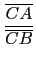
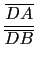

suivant: Le conjugué harmonique :
monter: La division harmonique, pôles
précédent: Le birapport de 4
Table des matières
Index
Division harmonique : harmonic_division div_harmonique
Quatre points alignés
A, B, C, D sont en division harmonique
si on a :
 = -  = k
On dit aussi que C et D divisent le segment AB dans le rapport k et que
le point D est le conjugué harmonique de C par rapport à A et B
ou plus rapidement D est le conjugué harmonique de A, B, C.
Quatre droites concourantes ou parallèles
d1, d2, d3, d4 sont
en division harmonique si elles déterminent sur chaque droite sécante une
division harmonique. On dit aussi que
d1, d2, d3, d4 forment un
faisceau harmonique.
div_harmonique a comme arguments 3 points alignés ou leur 3 affixes
(resp 3 droites concourantes ou parallèles) et le nom d'une variable.
div_harmonique affecte le dernier argument pour que l'on obtienne une
division harmonique et renvoie la liste des 4 points (resp des 4
droites) et dessine les points (resp les droites).
On tape :
div_harmonique(0,2,3/2,D)
On obtient :
[0,2,3/2,pnt(3,0,"D")] et seul le point D est dessiné
On tape :
div_harmonique(point(0),point(2),point(3/2),D)
On obtient :
[pnt(0,0),pnt(2,0),pnt(3/2,0), pnt(3,0,"D")] et les 4 points sont dessinés
Remarque : 0 représente la couleur du point.
On tape :
div_harmonique(droite(i,0),droite(i,1+i), droite(i,3+2*(i)),D)
On obtient :
[pnt([[i,0],0]),pnt([[i,1+i],0]), pnt([[i,3+2*i],0]),pnt([[i,-3+2*i],0,"D"])] et les 4 droites sont dessinées
suivant: Le conjugué harmonique :
monter: La division harmonique, pôles
précédent: Le birapport de 4
Table des matières
Index
Documentation de giac écrite par Renée De Graeve